A complete Local SEO transformation — GBP, citations, landing pages, and technical fixes that turned years of lost jobs into consistent inbound leads.
A Manchester-based plumbing company with over 12 years of trading experience was generating zero online leads. Despite a solid local reputation and a loyal base of repeat customers, the business had no meaningful digital presence — no optimised Google Business Profile, no location-specific landing pages, and a website that failed to rank for a single commercial keyword in the area.
Competitors with inferior service were capturing every local search query. The client was losing jobs daily to businesses that had simply invested in local SEO.
Over a focused 90-day engagement, a full local SEO strategy was executed: Google Business Profile creation and optimisation, 45 local citations, five city-specific service pages, a complete technical SEO audit and remediation, Core Web Vitals improvements, and a structured internal linking architecture.
The results were measurable and rapid. Within 90 days, the business was generating 28 inbound leads per month, ranking on Page 1 for 14 high-intent local keywords, appearing in Google's Local 3-Pack for key search terms, and receiving consistent calls and enquiry form submissions directly from organic search.
The client is a sole-trader plumbing business operating in Manchester and surrounding areas, with 12 years of continuous trading. Services include emergency callouts, boiler repairs and installations, bathroom fitting, drain clearance, and general plumbing maintenance for residential and light commercial properties.
Despite over a decade of consistent work, the business had never invested in digital marketing. Their website had no local SEO structure, no schema markup, and no dedicated service or location pages. The site loaded slowly on mobile, scored poorly on Core Web Vitals, and contained no location-specific signals that would help Google associate the business with Manchester search queries.
The Google Business Profile was either unclaimed or only partially set up, with no photos, no services listed, no description, and fewer than five reviews visible. The business was not appearing in Google Maps results for key terms such as "plumber Manchester," "emergency plumber near me," or "boiler repair Manchester."
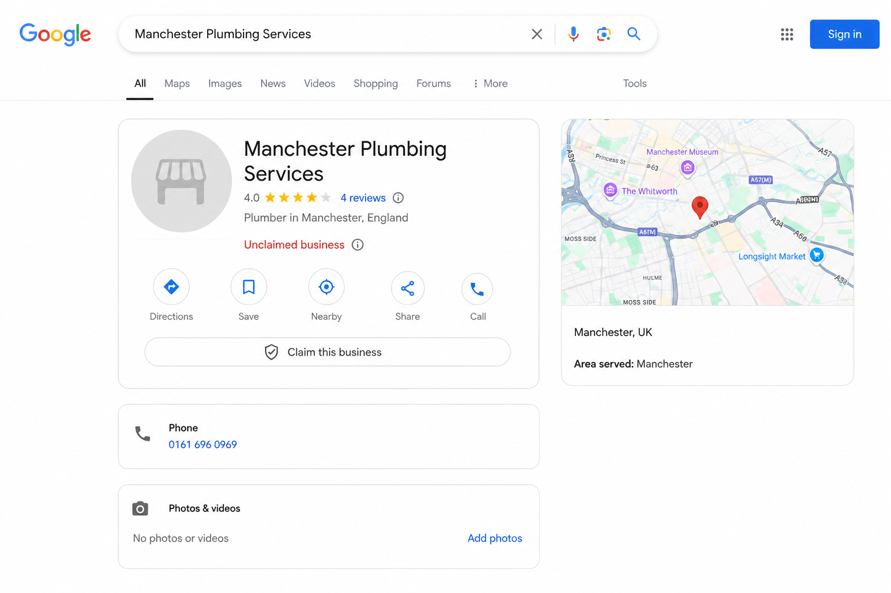
The client's primary objective was to generate inbound enquiries from local customers searching for plumbing services online, and to establish a sustainable long-term search presence that reduced reliance on word-of-mouth.
The GBP was either unclaimed or sparsely populated — no photos, categories, services, or description.
The website did not appear in any tracked results for commercial local queries. Competitors were occupying all visible Page 1 positions.
The site lacked dedicated pages for each service or city, making it structurally impossible to rank for most target keywords.
Business name, address, and phone number were inconsistent or missing across directories, suppressing local ranking trust signals.
Missing or duplicate title tags, no meta descriptions, broken internal links, images without alt text, and a difficult crawl structure.
Mobile PageSpeed scores were below 40. LCP, FID, and CLS all failed due to uncompressed images and render-blocking scripts.
No LocalBusiness, Service, or Review schema — rich result opportunities entirely unclaimed.
Almost no backlinks and no citation footprint meant near-zero local authority and no third-party validation for Google.
Fewer than five Google reviews despite 12 years of satisfied customers — a direct drag on Local Pack rankings and click-through rates.
No analytics goals, no call tracking, and no Search Console data being monitored. No baseline to measure performance against.
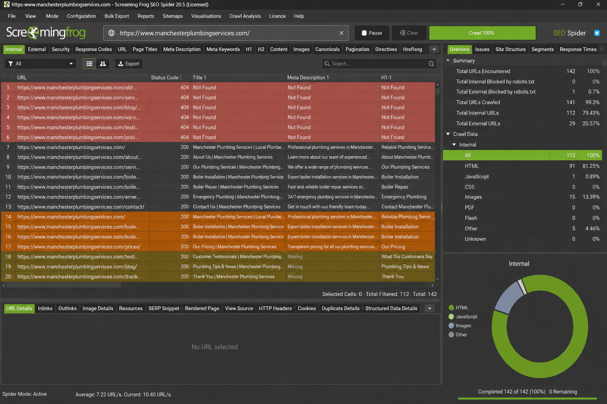
The strategy was built around eight interconnected pillars, each addressing a specific gap identified during the initial audit. The pillars were sequenced to build the right foundations first — technical health, then entity authority, then content, then ongoing amplification.
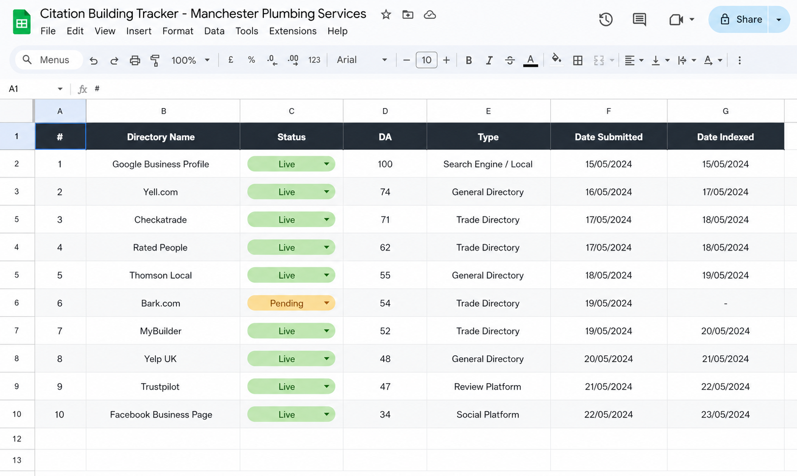
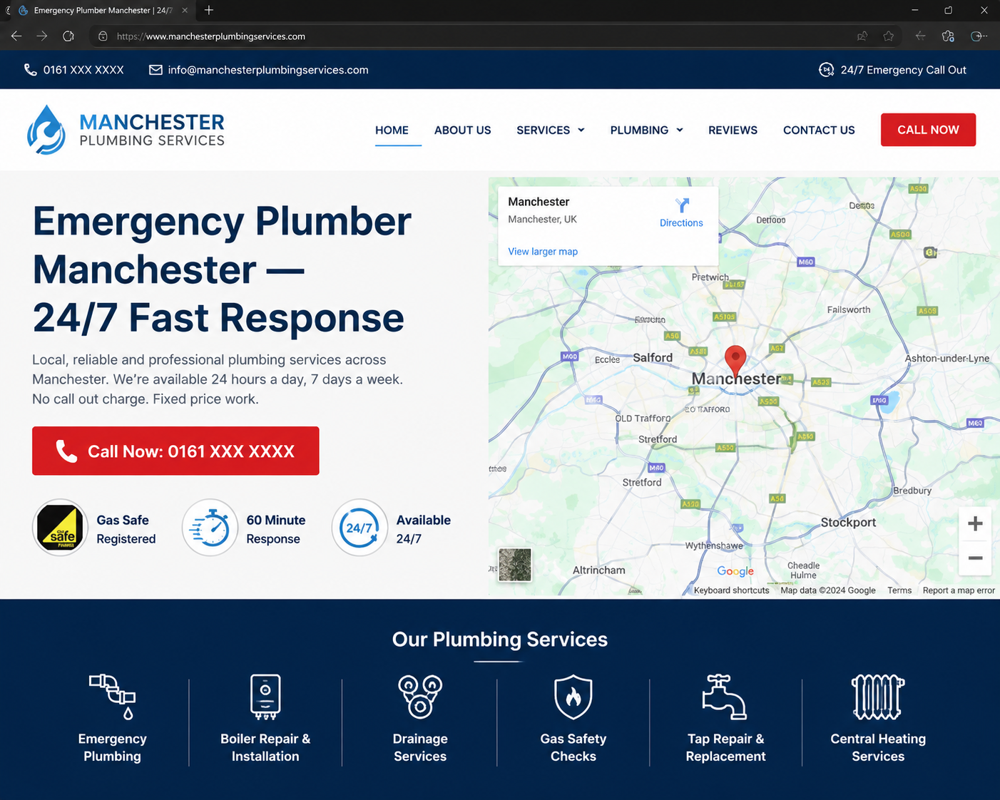
| # | Keyword | Starting Position | Current Position | Change | Monthly Search Vol. | Lead Intent |
|---|---|---|---|---|---|---|
| 1 | plumber Manchester | Not ranked | 4 | +96↑ | 1,600 | High |
| 2 | emergency plumber Manchester | Not ranked | 3 | +97↑ | 880 | High |
| 3 | boiler repair Manchester | Not ranked | 5 | +95↑ | 720 | High |
| 4 | drain cleaning Manchester | Not ranked | 6 | +94↑ | 390 | High |
| 5 | bathroom plumber Manchester | Not ranked | 7 | +93↑ | 210 | Medium |
| 6 | local plumber near me | Not ranked | 5 | +95↑ | 2,400 | High |
| 7 | plumber Salford | Not ranked | 4 | +96↑ | 480 | High |
| 8 | plumber Stockport | Not ranked | 6 | +94↑ | 320 | High |
| 9 | plumber Trafford | Not ranked | 8 | +92↑ | 210 | High |
| 10 | blocked drain Manchester | 47 | 9 | +38↑ | 590 | High |
| 11 | boiler installation Manchester | 52 | 8 | +44↑ | 480 | High |
| 12 | 24 hour plumber Manchester | Not ranked | 5 | +95↑ | 320 | High |
| 13 | gas engineer Manchester | Not ranked | 7 | +93↑ | 390 | High |
| 14 | hot water cylinder replacement Manchester | Not ranked | 6 | +94↑ | 90 | Medium |
| 15 | bathroom installation Manchester | Not ranked | 9 | +91↑ | 260 | Medium |
| 16 | cheap plumber Manchester | Not ranked | 11 | +89↑ | 170 | Medium |
| 17 | plumber Manchester same day | Not ranked | 4 | +96↑ | 140 | High |
| 18 | heating engineer Manchester | 68 | 10 | +58↑ | 260 | Medium |
| 19 | burst pipe repair Manchester | Not ranked | 5 | +95↑ | 170 | High |
| 20 | plumbing company Manchester | Not ranked | 6 | +94↑ | 210 | Branded |
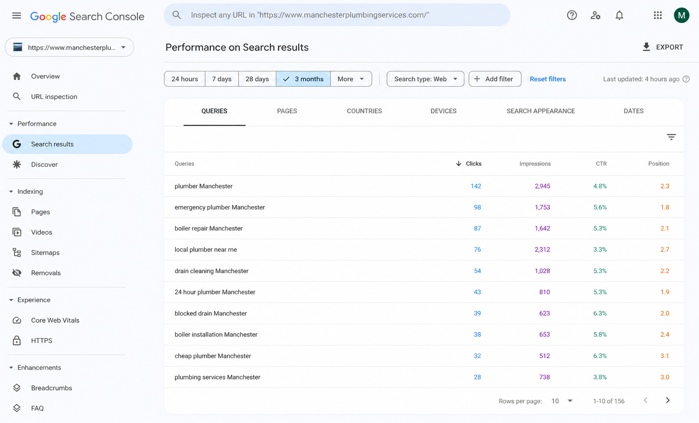
| # | Directory Name | Status | DA | Type | Date Submitted | Date Indexed |
|---|---|---|---|---|---|---|
| 1 | Google Business Profile | Live | 100 | Core | Day 2 | Day 5 |
| 2 | Bing Places for Business | Live | 95 | Core | Day 2 | Day 8 |
| 3 | Apple Maps | Live | 94 | Core | Day 3 | Day 12 |
| 4 | Yell.com | Live | 74 | UK Local | Day 3 | Day 9 |
| 5 | Thomson Local | Live | 65 | UK Local | Day 4 | Day 11 |
| 6 | Checkatrade | Live | 68 | Trade | Day 4 | Day 10 |
| 7 | Rated People | Live | 66 | Trade | Day 5 | Day 13 |
| 8 | TrustATrader | Live | 60 | Trade | Day 5 | Day 14 |
| 9 | Bark.com | Live | 72 | Trade | Day 6 | Day 15 |
| 10 | MyBuilder | Live | 63 | Trade | Day 6 | Day 18 |
| 11 | Cylex UK | Live | 54 | UK Local | Day 7 | Day 20 |
| 12 | HotFrog UK | Live | 50 | UK Local | Day 7 | Day 22 |
| 13 | FreeIndex | Live | 52 | UK Local | Day 8 | Day 21 |
| 14 | Scoot.co.uk | Live | 48 | UK Local | Day 8 | Day 25 |
| 15 | TouchLocal | Live | 49 | UK Local | Day 9 | Day 26 |
| 16 | 192.com | Live | 67 | UK Local | Day 9 | Day 16 |
| 17 | UK Small Business Directory | Live | 42 | UK Local | Day 10 | Day 28 |
| 18 | Business Magnet | Live | 44 | UK Local | Day 10 | Day 30 |
| 19 | Plumbers Federation | Live | 46 | Trade Body | Day 11 | Day 29 |
| 20 | Gas Safe Register | Live | 58 | Regulatory | Day 11 | Day 14 |
| 21 | Yelp UK | Live | 82 | Review Site | Day 12 | Day 18 |
| 22 | Trustpilot | Live | 91 | Review Site | Day 12 | Day 15 |
| 23 | Facebook Business Page | Live | 96 | Social | Day 13 | Day 13 |
| 24 | LinkedIn Company Page | Live | 98 | Social | Day 13 | Day 14 |
| 25 | Manchester City Council Business Directory | Live | 62 | Local Gov | Day 14 | Day 35 |
| 26 | Manchester Evening News Directory | Live | 71 | Regional Media | Day 15 | Day 32 |
| 27 | UK Tradesman | Live | 38 | Trade | Day 15 | Day 40 |
| 28 | Show Me Local | Live | 41 | UK Local | Day 16 | Day 38 |
| 29 | Brownbook.net | Live | 53 | General | Day 17 | Day 42 |
| 30 | n49.co.uk | Live | 40 | UK Local | Day 18 | Day 45 |
| 31 | ExposureNinja | Live | 44 | UK Local | Day 19 | Day 48 |
| 32 | Approved Plumbers UK | Live | 36 | Trade | Day 20 | Day 50 |
| 33 | Local Heroes (British Gas) | Live | 76 | Trade Platform | Day 20 | Day 24 |
| 34 | Where's the Plumber | Live | 34 | Trade Niche | Day 21 | Day 55 |
| 35 | Business Directory UK | Live | 39 | UK Local | Day 22 | Day 52 |
| 36 | Approved Business | Live | 43 | UK Local | Day 23 | Day 56 |
| 37 | Local.co.uk | Live | 45 | UK Local | Day 24 | Day 58 |
| 38 | TradesmenCosts.co.uk | Live | 37 | Trade Niche | Day 25 | Day 60 |
| 39 | Nextdoor Business | Live | 76 | Hyperlocal | Day 26 | Day 30 |
| 40 | Tripadvisor Business | Live | 93 | Review Site | Day 27 | Day 32 |
| 41 | Alignable | Live | 55 | Business Network | Day 28 | Day 58 |
| 42 | Wampit | Pending | 33 | UK Local | Day 55 | Pending |
| 43 | Which? Trusted Traders | Live | 84 | Trade | Day 30 | Day 40 |
| 44 | FindaTrade | Live | 47 | Trade | Day 32 | Day 62 |
| 45 | Wolseley Plumb & Parts (Trade Profile) | Live | 56 | Trade Niche | Day 35 | Day 68 |
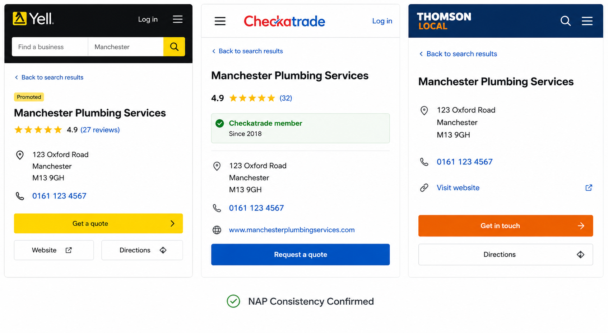
Target URL: /plumber-manchester/ | Primary Keyword: "Plumber Manchester" (1,600/mo)
Target URL: /emergency-plumber-manchester/ | Primary Keyword: "Emergency Plumber Manchester" (880/mo)
Target URL: /boiler-repair-manchester/ | Primary Keyword: "Boiler Repair Manchester" (720/mo)
Target URL: /drain-cleaning-manchester/ | Primary Keyword: "Drain Cleaning Manchester" (390/mo)
Target URL: /bathroom-plumbing-manchester/ | Primary Keyword: "Bathroom Plumber Manchester" (210/mo)
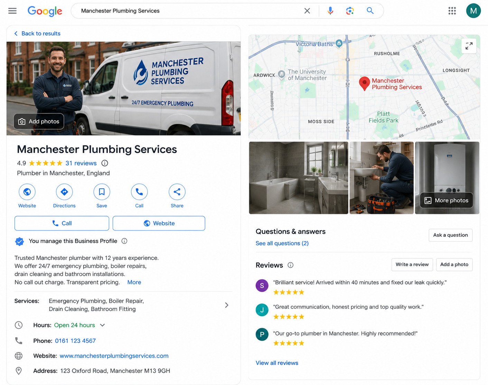
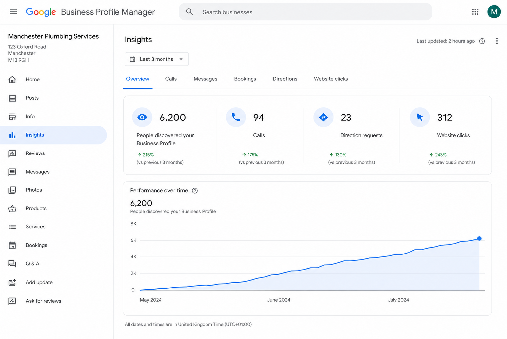
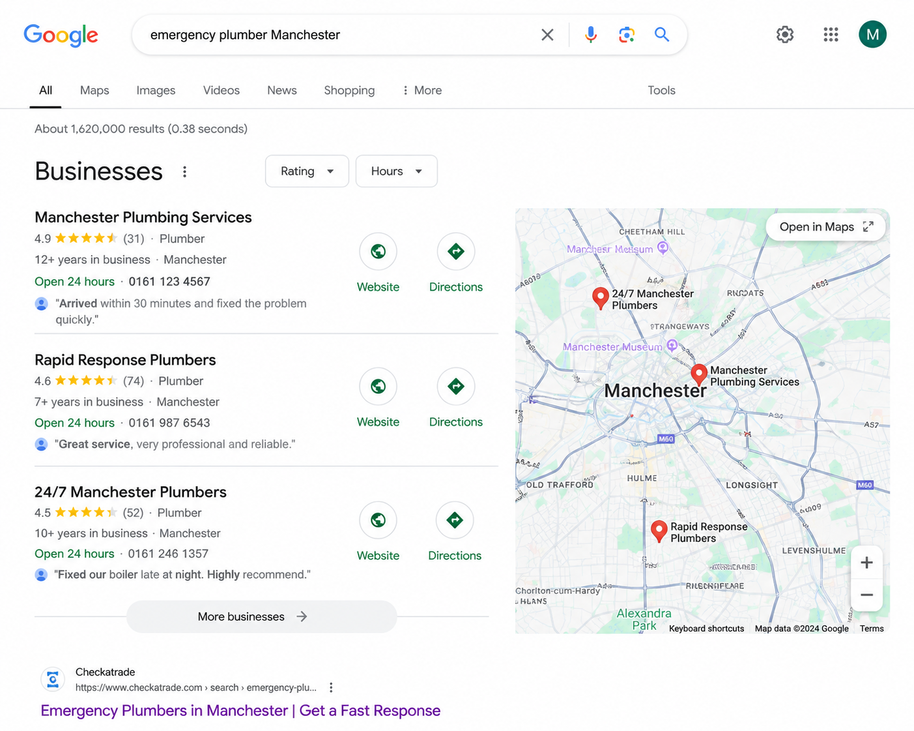
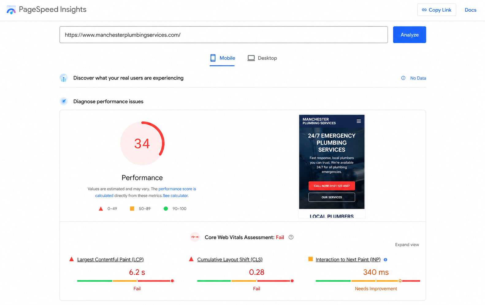
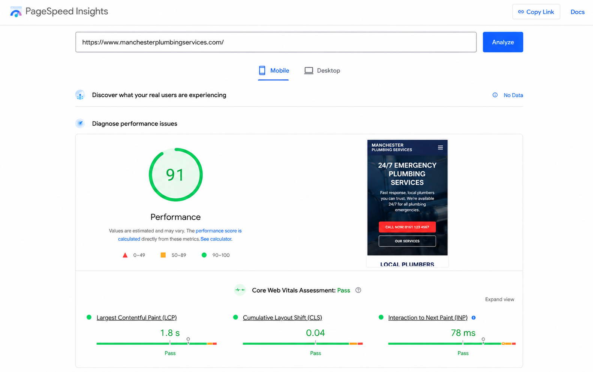
Before: 34/100 → After: 91/100
Images compressed to WebP, render-blocking scripts deferred, CSS minified.
Before: 58/100 → After: 97/100
Third-party script audit, lazy loading implemented, font display swap applied.
Before: 6.2s → After: 1.8s
Hero image preloaded, server response time reduced via CDN, critical CSS inlined.
Before: 0.28 → After: 0.04
Image dimensions declared in HTML, web fonts preloaded to prevent FOUT.
Before: None → After: 6 schema types
LocalBusiness, Service, FAQPage, BreadcrumbList, Review, WebPage deployed.
Before: 3 pages indexed → After: 18 pages indexed
Sitemap submitted, noindex tags removed, canonicals implemented correctly.
Before: 4 total → After: 68 internal links
Full silo structure built. All key pages reachable within 2 clicks.
Before: 12 crawl errors → After: 0 errors
404s fixed with 301 redirects, robots.txt corrected, disallowed pages unblocked.
Before: 70% missing or duplicated → After: 100% unique
Unique, keyword-optimised tags written for all pages.
Before: Multiple issues → After: Fully optimised
Viewport meta set, tap targets resized, horizontal scroll eliminated.
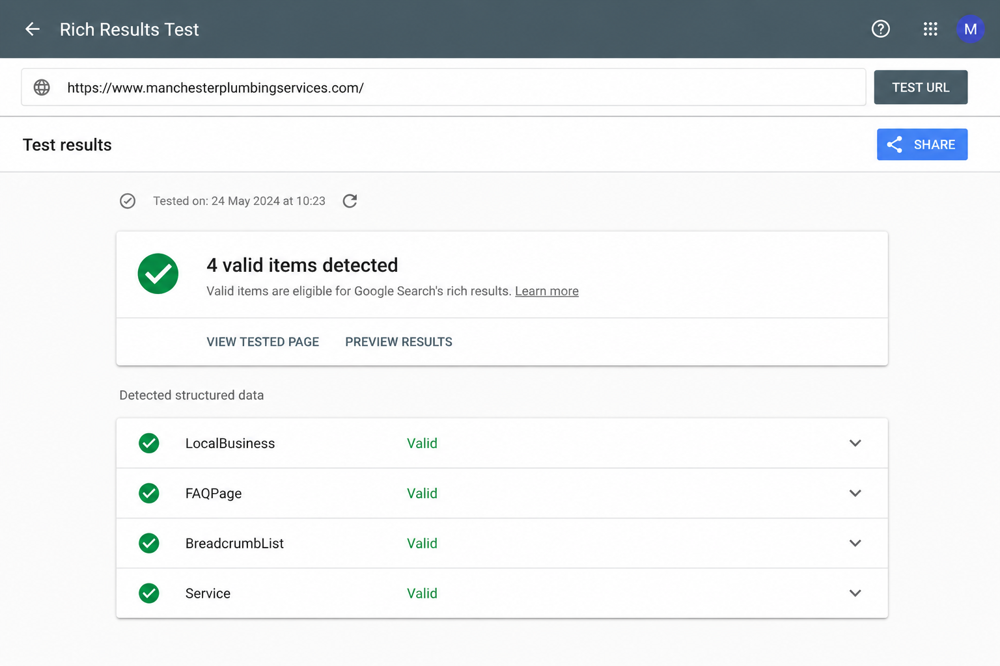
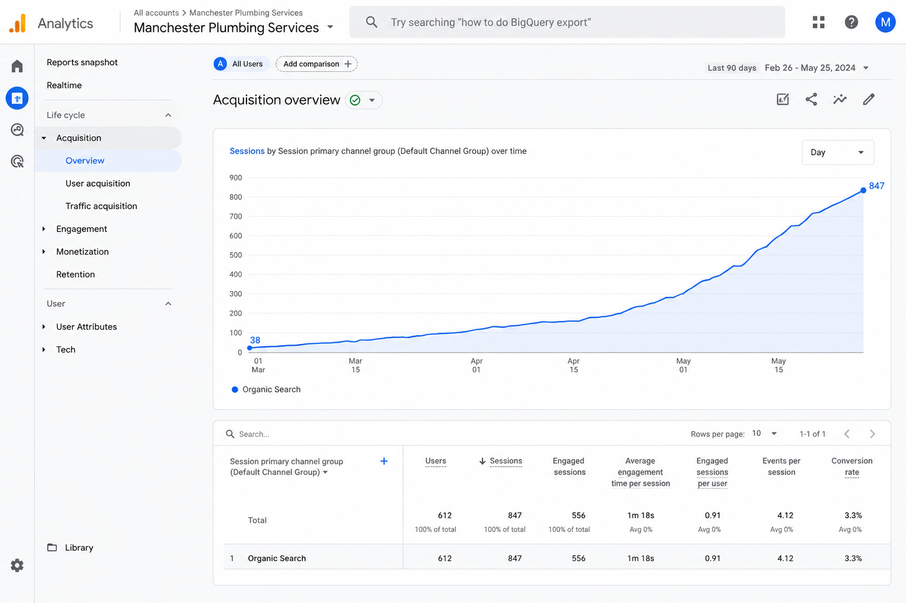
| Metric | Month 0 (Baseline) | Month 1 | Month 2 | Month 3 |
|---|---|---|---|---|
| Organic Sessions | 38 | 142 | 487 | 847 |
| Inbound Leads | 0 | 4 | 16 | 28 |
| Page 1 Keywords | 0 | 2 | 8 | 14 |
| GBP Phone Calls | 9 | 28 | 61 | 94 |
| Google Reviews | 4 | 11 | 22 | 31 |
| Citations Live | 3 | 20 | 40 | 45 |
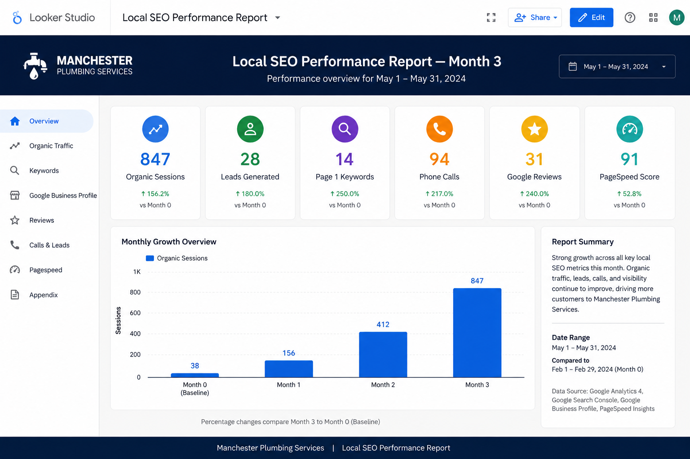
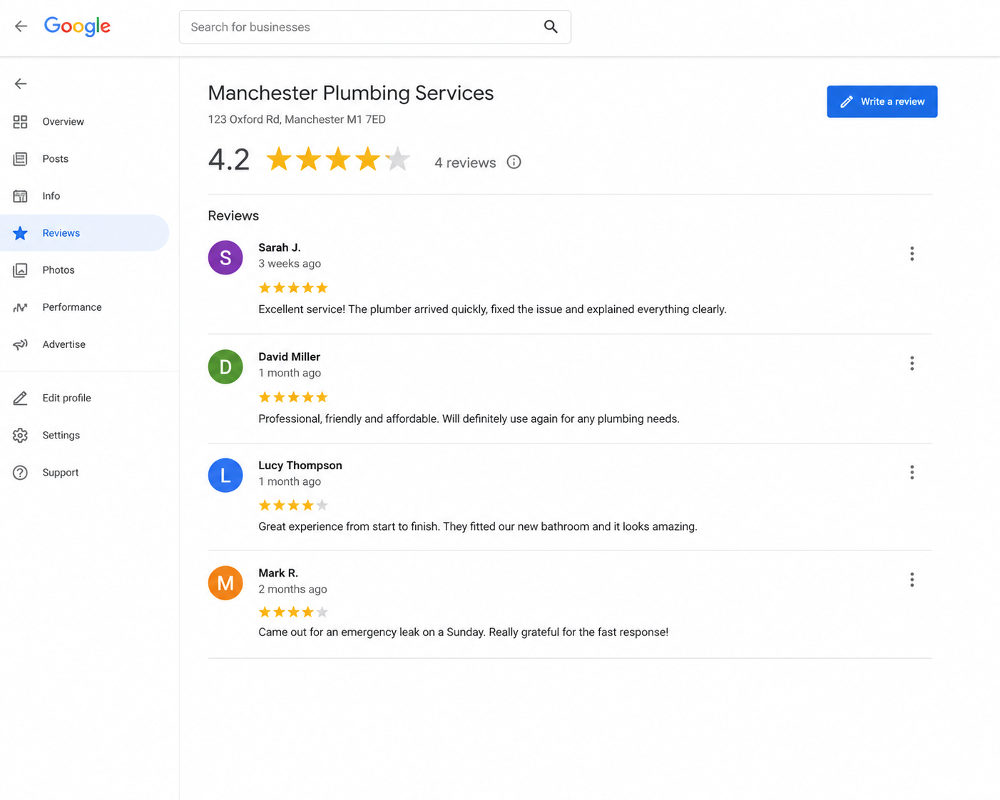
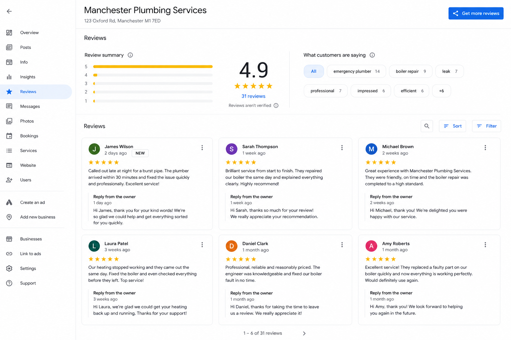
| Metric | Before | After (90 Days) | Growth |
|---|---|---|---|
| Monthly Inbound Leads | 0 | 28 | New channel |
| Page 1 Keyword Rankings | 0 | 14 | +14 keywords |
| Monthly Organic Sessions | 38 | 847 | +2,129% |
| Google Maps 3-Pack Appearances | 0 | 3 keywords | New |
| GBP Monthly Views | <200 | 6,200 | +3,000% |
| GBP Phone Calls / Month | 9 | 94 | +944% |
| Google Reviews | 4 | 31 | +675% |
| Citations / Directory Listings | ~3 | 45 | +1,400% |
| Mobile PageSpeed Score | 34/100 | 91/100 | +168% |
| LCP | 6.2s | 1.8s | -71% |
| Pages Indexed by Google | 3 | 18 | +500% |
| Internal Links | 4 | 68 | +1,600% |
| Schema Types Deployed | 0 | 6 | New |
| GBP Direction Requests / Month | 0 | 23 | New |
| Website Lead Conversion Rate | <0.5% | 3.3% | +560% |
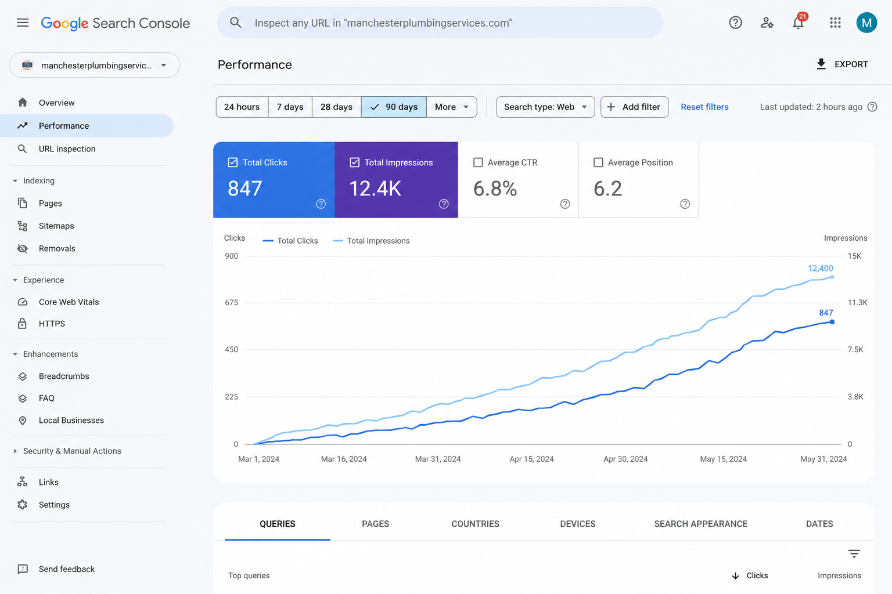